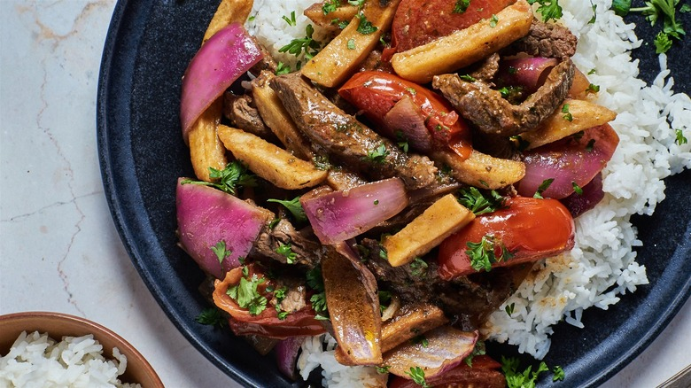

Lomo Saltado

El saltado bandera de Perú
El lomo saltado es un plato tradicional peruano que se hace generalmente en un wok chino y contiene lomo fijo, papas fritas, arroz blanco, sillao, vinagre, tomate y cebolla roja.
Ingredientes:
- Lomo fino
- Cebolla roja
- Choclo desgranado
- Sillao
- Vinagre
- Arroz blanco
- Papas amarillas
- Ají amarillo
Preparación:
- Exprime los limones.
- Corta el pescado en trozos de 3 centímetros.
- Corta el ají y el culantro muy finamente.
- Corta la cebolla en corte juliana.
- Mezcla el caldo de pescado con el ají, la cebolla y el culantro.
- Une el pescado con todos los demás ingredientes.
- Sirve con chifles y canchita chulpi al gusto.